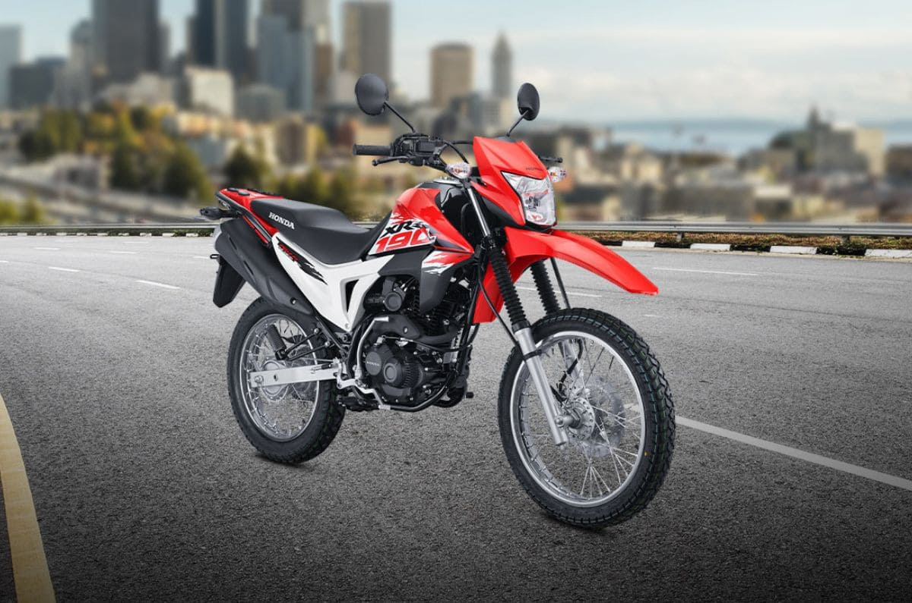

La HONDA XR190L es una motocicleta de aventura de 184.4 cc, con un motor monocilíndrico de 4 tiempos y OHC, que produce 15.6 HP a 8,500 RPM y 15.7 Nm de torque a 6,000 RPM. Tiene una capacidad de tanque de 12 litros y una transmisión mecánica de 5 velocidades